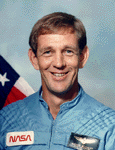

Lyndon B. Johnson Space Center
Houston, Texas 77058
|
National Aeronautics and Space Administration Lyndon B. Johnson Space Center Houston, Texas 77058 |
 |
Biographical Data |
||
Michael J. Mcculley (Captain, USN, Ret.)
NASA Astronaut (Former)
PERSONAL DATA: Born August 4, 1943, in San Diego, California, but considers Livingston, Tennessee to be his hometown. Married to the former Jane Emalie Thygeson of Melbourne, Florida. Six children. Recreational interests include skiing, reading, camping, and jogging.
EDUCATION: Graduated from Livingston Academy Livingston, Tennessee, in 1961; received a bachelor of science degree and a master of science degree in Metallurgical Engineering from Purdue University.
ORGANIZATIONS: Member of the Society of Experimental Test Pilots, the Association of Space Explorers, the Boy Scouts of America (Eagle Scout), and Tau Beta Pi. Active in community affairs, he currently serves on the curriculum advisory committee for the engineering school at Purdue University, and formerly served as Chairman of the Board of Trustees for the Clear Lake Regional Medical Center.
SPECIAL HONORS: Awarded the Legion of Merit, Defense Superior Service Medal, NASA Space Flight Medal, Navy Commendation medal, Armed Forces Expeditionary Medal, Meritorious Unit Commendation, National Defense Medal, Small Arms Expert Ribbon, and the Child Advocate of the Year Award for the state of Florida from the Childrens Home Society, an organization dedicated to services for children and young mothers.
EXPERIENCE: After graduation from high school, McCulley enlisted in the U.S. Navy and subsequently served on one diesel-powered and two nuclear-powered submarines. In 1965 he entered Purdue University, and in January 1970, received his Naval Officers commission and both degrees. Following flight training, he served tours of duty in A-4 and A-6 aircraft, and was selected to attend the Empire Test Pilots School in Great Britain. He served in a variety of test pilots billets at the Naval Air Test Center, Patuxent River, Maryland, before returning to sea duty on USS SARATOGA and USS NIMITZ.
He has flown over 50 aircraft types, logging over 5,000 flying hours, and has nearly 400 carrier landings from six aircraft carriers.
Selected by NASA in May 1984, McCulley completed a one-year training and evaluation program in June 1985, qualifying him for assignment as a pilot on future Space Shuttle flight crews. His technical assignments include: Astronaut Office weather coordinator; flight crew representative to the Shuttle Requirements Control Board; Technical Assistant to the Director of Flight Crew Operations; lead of the Astronaut Support Team at the Kennedy Space Center. He flew on STS-34 in 1989 and has logged a total of 119 hours and 41 minutes in space.
In October 1990, following his retirement from NASA and the Navy, McCulley was employed by Lockheed Martin Space Operations and served as Vice President and Deputy Launch Site Director for the Kennedy Space Center. He was promoted to Director in November 1995.
McCulley next served as Vice President and Associate Program Manager for USAs (United Space Alliance) Ground Operations at the Kennedy Space Center in Florida. Named to this position on June 1, 1996, he was responsible for directing the integration of all processing activities associated with Americas Space Shuttle program to ensure safe and successful fulfillment of all company contractual commitments to NASA. He was promoted to Vice President and Deputy Program Manager for the Space Flight Operations Contract (SFOC), where he assisted USAs Vice President and Program manager in the management of the Space Shuttle Program and, in November 1999, was named Chief Operating Officer (COO) of USA, responsible for the day-to-day operations and overall management of USA, the Prime Contractor for the Space Shuttle Program.
On May 15, 2003, Mike McCulley was named President and Chief Executive Officer of United Space Alliance and is ultimately responsible for the direction, development and operations of the company. McCulley retired from USA in September 2007.
SPACE FLIGHT EXPERIENCE: McCulley was the pilot on STS-34. The crew aboard Shuttle Orbiter Atlantis launched from Kennedy Space Center, Florida on October 18, 1989, and landed at Edwards Air Force Base, California, on October 23, 1989. During the mission crew members successfully deployed the Galileo spacecraft on its journey to explore Jupiter, operated the Shuttle Solar Backscatter Ultraviolet Instrument (SSBUV) to map atmospheric ozone, and performed numerous secondary experiments involving radiation measurements, polymer morphology, lightning research, microgravity effects on plants, and a student experiment on ice crystal growth in space. Mission duration was 4 days, 23 hours, 41 minutes.
OCTOBER 2007
This is the latest revision available through NASA. Further updates should be requested from the above named individual.
{kind=link}